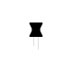

inductor mic is a mic which can listen to the electromagnetic field, in inductor mic an inductor generates signal after coming in contact with electromagnetic field.
step 1: choose a headphone jack splitter with one mic and one headphone output.
step 2: choose inductor with inductonce of 100 microhenry
step 3: cut "mic input" wire on headphone jack splitter, and take out two copper wires which are inside of it.
step 4: connect those two wires with inductor mic's connector's (in any way)